Computing and Crucible Eras
This article focuses not on any specific games but on the broader historical context in which games and gaming came to be situated in a technology context, specifically that of computing.
A Basis in Experimentation ...
Exploring the early days of computing and game development is like peering into the Wild West of technology. In the nascent stages, hobbyists — armed with programming languages like BASIC — were similar to pioneers in uncharted territory. These early game developers weren't just coding; they were conducting experiments, pushing the limits of the available technology to see what it could do.

It was a fusion of creativity and curiosity, where every line of code was a step into the unknown. Much like scientists in a lab, these early hobbyists were learning by doing, discovering the capabilities and constraints of the hardware and the software they could run on it as they went along.
Crucially, these games weren't just entertainment; they were manifestations of the evolving relationship between humans and machines, each line of code a small triumph in the ongoing saga of technological discovery. It was a time when the boundaries of possibility were drawn by the imaginations of those who cared enough or were interested enough to experiment with the digital frontier.
... But a Focus on Computation
Arguably, computer science should have been called computing science. Or, there should have been a shift to that terminology as the technology evolved beyond the hardware itself and into what the software running on that hardware actually did.

When I say "computation," please understand that this isn't just about the mechanics of programming or coding. It's about computational design, the latest incarnation of which engineers create in artificial intelligence applications.
As a matter of interest, artificial intelligence grew up with the idea of technology-based gaming and continues to be used in that context today.
Computation has always been, and still is, what transforms the design of our products and services. The history of design in this context has always been an exciting interplay of various dynamics. These dynamics have engineers considering which problems require solutions from a design perspective, which users are prioritized in the design process, and what considerations are given to other technological systems. Eventually, this morphed into looking at who holds the authority to establish technical and economic priorities.
Interestingly, these are fundamentally social considerations that intricately mold the trajectory of technological development. In essence, the evolution of technology is a dynamic interplay between technical functionalities and the social forces that navigate the complex terrain of problem-solving, user needs, and overarching societal priorities.
Those considerations mean that computational design is the intersection of humans and technology, an area that has always fascinated me. Design has always determined how humanizing or dehumanizing that intersection is. One of the ways that computing has always been most humanized was when it focused on simulations and games.
Many of those early simulations and games began in the context of education — around what I'm calling "people's computing" — and then became more democratized and, eventually, commercialized. Thus, the human-technology intersection and the societal impact became profoundly more significant.
Historical Computing
The history of computing captivates with its intriguing landscape, beckoning researchers to employ a myriad of theoretical and historiographical frameworks adeptly. This inherent diversity fascinates and enriches the subject, intricately weaving through crucial historical developments from the late nineteenth to the twentieth centuries. It embraces technical, social, economic, and political facets, forming a tapestry of interconnected elements.
Computing is a subject of paramount significance for specialists in the history of technology and for a myriad of scholars across diverse disciplines.
Computing involves breaking down complex problems into smaller, manageable parts, designing efficient algorithms, and implementing systematic solutions. This approach, essentially a computational mindset, resonates across disciplines. Thus, computing provides a structured and analytical approach that transcends the boundaries of traditional computer science, making it a powerful tool for problem-solving and knowledge advancement in various areas of study.
The richness of the history of computing extends its relevance not only to social and cultural historians but also to sociologists of professions. This breadth of scope underscores its role as a focal point for interdisciplinary exploration, drawing scholars from various fields to unravel the multifaceted tapestry of its evolution and impact on the broader historical landscape.
That may all sound very academic, but there's a specific reason for my assertion. Recent scholarship in the history of technology has revealed a profound and enduring insight: intricate social processes play an equally influential role and actively shape technological change beyond the influence of inherent technological imperatives. This realization challenges the notion of a singular, ideal trajectory for technological evolution. Instead, technologies emerge as solutions crafted to solve specific problems and tailored to particular users within distinct temporal and spatial contexts.
This insight means that our technology and computation have an inherently interesting intersection with humans and, arguably, even what it means to be human. It is particularly fascinating when you consider how much of this history began.
When Computing Was Human
A significant historical context is worth noting: the first computers weren't machines. They were instead human beings. They were humans who computed, meaning "worked with numbers."

Consider that way back in 1613, a poet named Richard Brathwait, in his The Yong Mans Gleanings, said:
What art thou (O Man) and from whence hadst thou thy beginning? What matter art thou made of, that thou promisest to thy selfe length of daies: or to thy posterity continuance. I haue read the truest computer of Times, and the best Arithmetician that euer breathed, and he reduceth thy dayes into a short number: The daies of Man are threescore and ten.
Did you spot that interesting word in there? Computer. I'll say again: this passage was from 1613.
So, who is this "best Arithmetician" that Brathwait is referring to? Some have argued that he was conceiving of the "computer of Times" as a divine being that could calculate the exact length of a person's life. Others suggest that Brathwait was legitimately referring to someone very good at arithmetic.
As an interesting related note, the mathematician Gottfried Leibniz said this:
If controversies were to arise, there would be no more need of disputation between two philosophers than between two calculators. For it would suffice them to take their pencils in their hands and to sit down at the abacus, and to say to each other . . . Let us calculate.
That was in his 1685 book The Art of Discovery. Here, when he says "calculators," he's referring to people and "calculate" as an action they do. Leibniz didn't use "computers" or "compute," making it all the more interesting that Brathwait seemingly hit upon that terminology.
As far as we know, Brathwait was the first to write the word "computer," even if we're not quite sure what he meant by it. According to the Oxford English Dictionary, there was an earlier usage. According to the dictionary, the term "computer" was first used verbally back in 1579. The publishers provide no details, so, to my knowledge, there's no way to corroborate that.
That said, the Oxford English Dictionary reference links the term's verbal use from 1579 to "arithmetical or mathematical reckoning." And this certainly was a task done by people. This task is referenced by Sir Thomas Browne in volume six of Pseudodoxia Epidemica from 1646, as well as Jonathan Swift in A Tale of a Tub from 1704.
So, while we don't have a direct thread linking Brathwait's use of the term to those later usages, it's clear that the general idea of "computer," even if going by another name, was in the public zeitgeist and was focused on what we would certainly now call "computing."
In 1895, the Century Dictionary defined a "computer" as:
One who computes; a reckoner; a calculator.
So we see some continuous thread from at least 1613 (and possibly 1579) up to 1895 regarding the notion of "computing."
If we take a side trip into etymology, the root com originates from Latin, meaning "together." The suffix puter likewise has its basis in the Latin word putare, which means "to think or trim." Some have proposed that the idea of "computer" thus represented a "setting to rights" or a "reckoning up."
Eventually, computing machines came along to replace human computers. A relevant idea that resonated with me comes from John Maeda in his 2019 book How To Speak Machine: Computational Thinking for the Rest of Us:
To remain connected to the humanity that can easily be rendered invisible when typing away, expressionless, in front of a metallic box, I try to keep in mind the many people who first served the role of computing 'machinery' . . . It reminds us of the intrinsically human past we share with the machines of today.
Indeed! And as we try to build computing solutions that "learn more like us," "act more like us," or "think more like us," I think that Maeda's reminder takes on an exciting focus. That focus on the human past we share with our technology becomes very interesting in the context of games.
The Broad Context of Games
The idea of playing games is an activity that has been with humans for a long time, certainly before programmers could render those games via computing technology. It might even be fair to say that "game playing" aspects existed in species that pre-date humans.
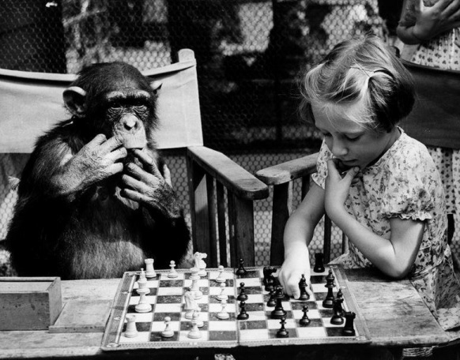
This notion of long-standing game-playing is a crucial point that I'll state once again: the concept of game-playing is deeply ingrained in the fabric of existence, extending far beyond the advent of computing technology. If we stroll through the evolutionary timeline, we can see traces of playful behavior in various species predating humans.
"Play" is a fundamental learning, adaptation, and social interaction mechanism. From the intricate mating rituals of birds to the strategic pouncing of big cats, elements of what we might call "game playing" are evident. In the broader context, it's not just a human phenomenon; it's a thread woven into the very essence of life.
As we dive into computing, we're tapping into and formalizing a practice with ancient roots in the evolutionary playbook. Games in the computing context are a digital manifestation of a timeless instinct for exploration, strategy, and, perhaps, a touch of whimsy that has accompanied life since its early forms. In this context, we've seen an interesting form of human evolution.
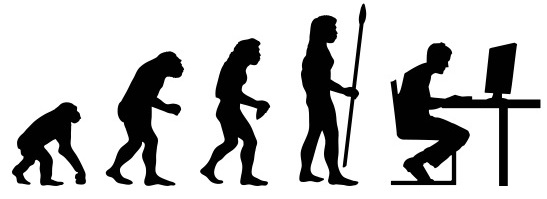
Games have continued to intersect with artificial intelligence as both grew up together, and we're in a time now where humans are intersecting more directly with artificial intelligence itself, even outside the context of gaming. Thus, according to some, we might be on a path to a different form of evolution.
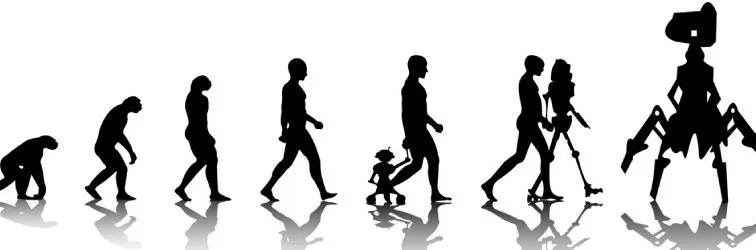
But to see how we're getting from there to here and from then to now, it helps to look at the computing eras that provided a nexus point for a crucible. Sticking with an evolutionary theme, the crucible I refer to provided a bit of a punctuated equilibrium to what could have instead been a process much more focused on gradualism.
Computing Eras
Let's talk about the idea of specific computing eras. Even more specifically, I want to bring up the idea of a particular bridging "era" that separates two of the broadly recognized primary eras of computing.
What led me to frame this approach stems from a lot of research I've been doing into ludology and narratology regarding how one gaming segment evolved in the context of computing. The bridging "era" I refer to provided a bit of a crucible. In my research, I found that this crucible dramatically shaped the future development of simulations and games and thus had an outsized impact on ludic and narrative aspects, which have long fascinated me.
Much of this work on gaming and simulations intersected with research into artificial intelligence, such as algorithms being able to play games as well as a human could. This focus was, in fact, one of the early barometers that people proposed to understand if we had truly created an artificial intelligence.
I recommend the 2017 book Deep Thinking: Where Machine Intelligence Ends and Human Creativity Begins by Gary Kasparov. Yes, that Kasparov, the one who was defeated by IBM's Deep Blue computer in a series of chess games in 1997.
The 2013 book Computer: A History of the Information Machine presents an interesting way to frame some history about the computer itself. I'll expand on that here a bit. In August of 1890, the magazine Scientific American put on its cover a montage of the equipment constituting the new punched-card tabulating system for processing the United States Census.
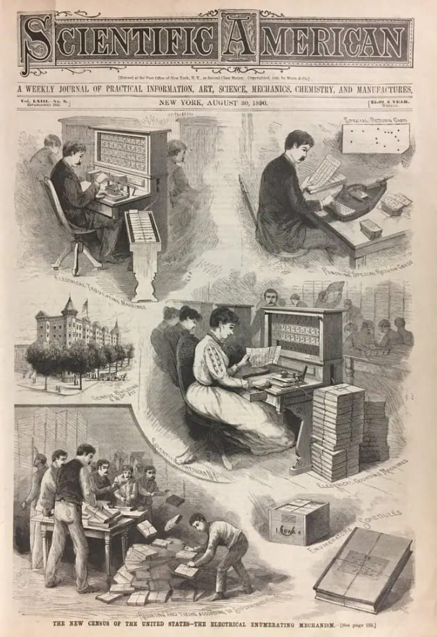
In January of 1950, the cover of Time Magazine showed an anthropomorphized image of a computer wearing a Navy captain's hat. This cover was part of a story about a calculator built at Harvard University for the United States Navy.
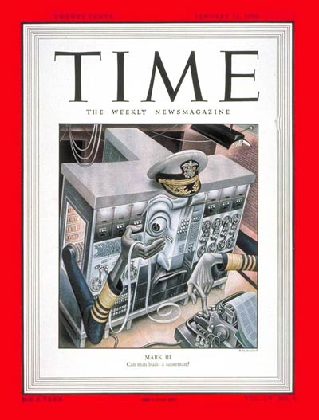
In January of 1983, Time Magazine had to choose its "Man of the Year" once again. The editorial staff decided to reframe the idea as "Machine of the Year" and gave the award to the personal computer.
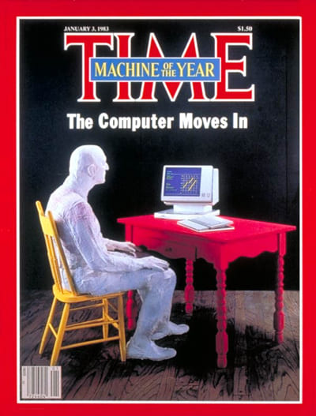
Following those threads leads you on an interesting journey regarding how the computer was viewed throughout a certain period of history. This focus, by definition, emphasized the perceived importance of computing.
Going through that history, you see there was a time when large organizations began adopting computing technology at an ever-increasing rate, mainly as they saw such technology as the solution to their information and data-processing needs.
The Computer Context
By the end of the nineteenth century, desk calculators were mass-produced and installed as standard office equipment. This technology usage occurred first in large corporations, then later in progressively smaller offices, and finally, in retail contexts.
While this was happening, the punched-card tabulating system developed to let the United States government cope with its 1890 census data gained wide commercial use in the first half of the twentieth century. That's what the above Scientific American issue was making visible to its audience.
Analog Computers
Another thread winding through the late nineteenth century into the early twentieth was the emergence of a particular form of computing known as analog computing. This computing style reached its peak in the 1920s and 1930s.
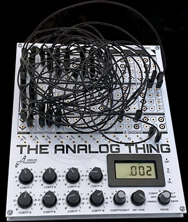
Analog computing was a method of computation that involved using physical models and devices to perform calculations by directly manipulating continuous signals. The idea here was that engineers would build electrical or mechanical systems representing the mathematical equations involved in a particular problem. Once that was done, the engineers would use these systems to measure the values required to perform the desired calculations.
Engineers utilized analog computers in many fields, including the design of emerging electric power networks, where this kind of computing could help analyze power flow and stability.
Yet, there was a downside. The analog technologies were characterized by slow computation times. This slowness was partly due to the physical nature of the devices and the fact that they operated on continuous signals, which required time for various processes to start and finish. Adding to that problem, analog computers often required skilled operators or engineers to set up and calibrate the devices for specific tasks.
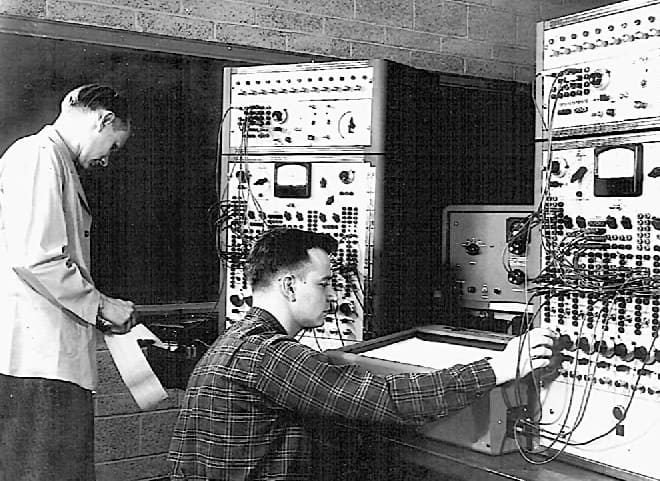
Adjusting the physical components to represent the desired mathematical model was a manual process that demanded a certain amount of expertise.
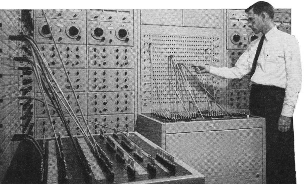
This human involvement made analog computing less automated and more labor-intensive. However, on the plus side, it meant that at least someone had a pretty good idea of how the thing was working.
Another big challenge, however, was that engineers typically designed analog computers for specialized tasks. Or, rather, one particular specialized task. Engineers would construct analog systems tailored to solve specific problems or handle specific calculations. While the machines were good at those dedicated tasks, they weren't well-suited for general-purpose computing or solving diverse problems.
Imagine having to wire up your computer a particular way to read your email. Then, you had to rewire it entirely differently to browse the web. And rewire everything yet again to watch a video. Or you just had to get three different computers that did each. It's debatable which of those would be better, but that's the dilemma that anyone using analog computing was faced with.
As a consequence of being designed for specific purposes, an analog computer that was optimized for one type of computation might not be suitable for other types of computations. If you needed to perform a different kind of computation, you were stuck with getting an entirely different analog technology with a different configuration.
Stored-Program Computers
During the Second World War, there was a significant demand for advanced computing capabilities to support various military efforts. The limitations of analog computing, such as those slow computation times and the need for human intervention, lit a fire under some researchers — who were often encouraged and supported by the government — to explore new approaches for more powerful and versatile computing technologies.
The breakthrough came with the creation of the first electronic stored-program computers. These new computing devices allowed for storing instructions and data in electronic memory.
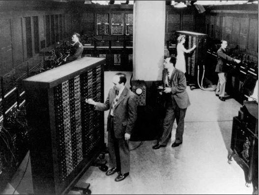
This innovation paved the way for automatic and programmable computing, eliminating the need for human intervention during calculations and enabling computers to execute various tasks. This new technology put us on the path to general-purpose computing instead of specialized computing.
The development of the first electronic computers gained momentum during and after the war. By the early 1950s, several of these machines had been successfully built and put into use. Those machines found applications in various fields, including military facilities for cryptography and code-breaking, atomic energy laboratories for simulations, aerospace manufacturers for engineering calculations, and universities for scientific research.
Well-known and notable early examples of electronic stored-program computers from this era include ENIAC (1945), EDSAC (1949), and UNIVAC I (1951). Crude as they may seem today, these machines were the pioneers of digital computing and established the foundation for the rapid advancement of computing technology in the years to come. Most importantly, as I stated above, they provided the basis for generalized computing.
General Computers
Over this period, I'm relating to you, businesses that specialized in constructing relevant computers emerged. Here, by "relevant," I mean computers designed to cater to the engineering, scientific, and, eventually, commercial markets. As a result, the application of computers transitioned from performing complex calculations to encompassing data processing and accounting. In effect, computing began to move to the office.
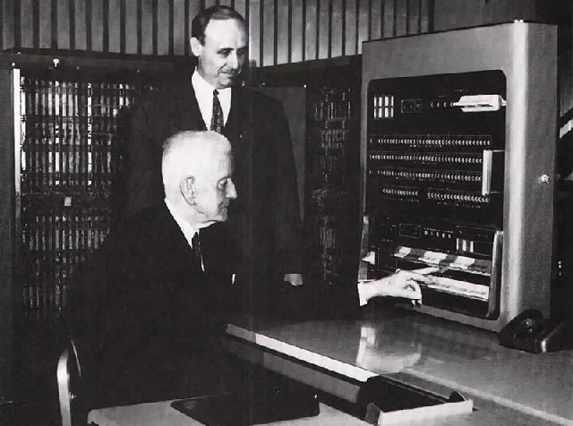
These businesses creating computing technology focused on government agencies, insurance companies, and large manufacturers as their initial primary target markets.
Thus, the early development of the computer industry marked a significant transformation in the function of computers. From solely a scientific instrument used for mathematical computation, computers evolved into machines that could process and manage business data and other forms of information. We started to see a democratization of the computer, which followed from the generalization of computing.
This democratization encouraged experimentation, and companies began to create innovations focused on improving the various components of these machines. The result was the creation of technologies that allowed for faster processing speeds, increased information storage capacities, better price/performance ratios, higher reliability, and a reduced need for maintenance.
So that was the computer context. This context enabled a computation context, so let's consider that next.